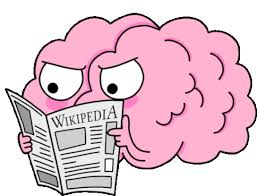

Јас сум Александра Олтовска, родена сум на 27.02.2004 и имам 20 години. Моментално студирам на ФИНКИ, насока ИМБ. Имам завршено средно училиште во СУГС „Никола Карев“, а основно во ООУ „Григор Прличев“ - Скопје. Најмногу сакам да излегувам со пријателите и да патувам низ светот. Моите хобиња се пешачење, гледање серии и филмови и читање книги. Би се опишала како лојална, позитивна, зрела личност која што е секогаш настроена кон целта. Интересна и трудољубива сум, посветена на постојаното учење и развој. Мојата страст кон истражување нови концепти и вештини ми дава енергија да се надминувам во секој аспект на моите напори. Преку посветеноста кон учењето и работата, секој ден се развивам и растам како личност, внесувајќи значителен придонес во мојата околина.
